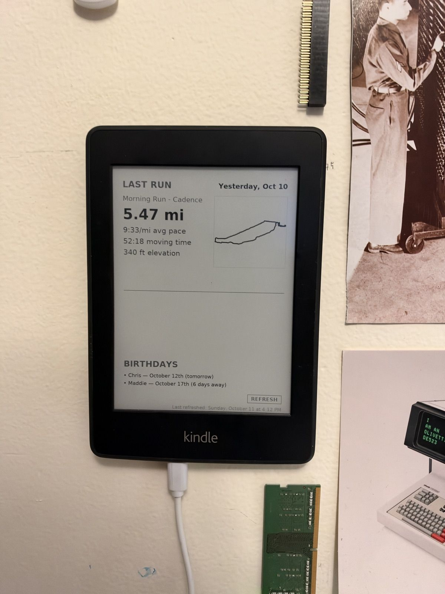
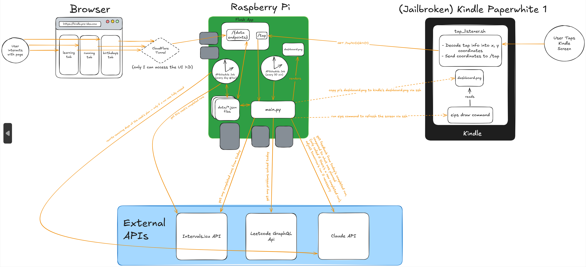

Kindle Dashboard
A personal e-ink dashboard running on a jailbroken Kindle Paperwhite. It shows my running plan (with AI coaching) and upcoming birthdays, refreshes every 30 minutes, and I can tap the screen to switch between views.
You can see exactly what's on my Kindle right now at kindlepreview.pre-idea.com!
Well... this is what it looks like

Why
I wanted an always-on screen next to my desk that shows the things I check every day (today's run, upcoming birthdays, etc.) I was going to buy an actual e-ink display and use that, but then felt cheap and decided to buy a 10 year old kindle on amazon instead :P
What it does
- Running plan: a multi-week training plan that Claude builds from a short conversation about my goals. Every day it compares the run I was supposed to do with the run I actually did, and Claude writes a short coaching note. It also adjusts the next day's run if I was naughty and ran more or less than I was meant to. If I'm not training for anything, there's no AI coaching and it just shows my latest run.
- Birthdays: upcoming birthdays show up on the dashboard.
- Touch navigation: tapping a section opens a more detailed view (e.g. tapping the running section shows the full week).
- Web page: a small website where I can edit my plan and birthdays from a browser, even when I'm not home (and only I can get in).
How it fits together
